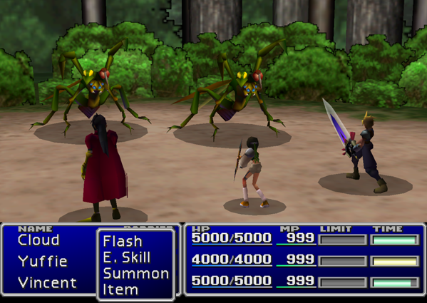
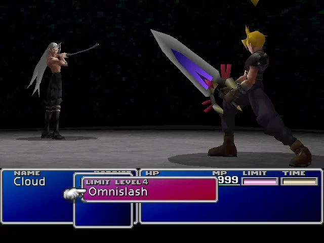

Development began in 1994, originally for the Super Nintendo Entertainment System. After delays and technical difficulties from experimenting with several platforms, most notably the Nintendo 64, Square moved production to the PlayStation, largely due to the advantages of the CD-ROM format. Veteran Final Fantasy staff returned, including series creator and producer Hironobu Sakaguchi, director Yoshinori Kitase, and composer Nobuo Uematsu. The title was the first in the series to use full motion video and 3D computer graphics, featuring 3D character models superimposed over 2D pre-rendered backgrounds. Although the gameplay remained mostly unchanged from previous entries, Final Fantasy VII introduced more widespread science fiction elements and a more realistic presentation. The combined development and marketing budget cost around US$80 million.
Final Fantasy VII received widespread commercial and critical success and remains widely regarded as a landmark title, and it is regarded as one of the most influential and greatest video games ever made. The title won numerous Game of the Year awards and was acknowledged for boosting the sales of the PlayStation and popularizing Japanese role-playing games worldwide. Critics praised its graphics, gameplay, music, and story, although some criticism was directed towards the original English localization. Its success has led to enhanced ports on various platforms, a multimedia subseries called the Compilation of Final Fantasy VII, and a high definition remake trilogy currently comprising Final Fantasy VII Remake (2020), and Final Fantasy VII Rebirth (2024).
Initial concept talks for Final Fantasy VII began in 1994 at Square studio, following the completion of Final Fantasy VI. As with the previous installment, series creator Hironobu Sakaguchi reduced his role to producer and granted others a more active role in development: these included Yoshinori Kitase, one of the directors of FFVI. The next installment was planned as a 2D game for Nintendo's Super Nintendo Entertainment System (Super NES). After creating an early 2D prototype of it, the team postponed development to help finish Chrono Trigger. Once Chrono Trigger was completed, the team resumed discussions for Final Fantasy VII in 1995.
The team discussed continuing the 2D strategy, which would have been the safe and immediate path just prior to the imminent industry shift toward 3D gaming; such a change would require radical new development models. The team decided to take the riskier option and make a 3D game on new generation hardware but had yet to choose between the cartridge-based Nintendo 64 or the CD-ROM-based PlayStation from Sony Computer Entertainment. The team also considered the Sega Saturn console and Microsoft Windows. Their decision was influenced by two factors: a highly successful tech demo based on Final Fantasy VI using the new Softimage 3D software, and the escalating price of cartridge-based games, which was limiting Square's audience. Tests were made for a Nintendo 64 version, which would use the planned 64DD peripheral despite the lack of 64DD development kits and the prototype device's changing hardware specifications. This version was discarded during early testing, as the 2000 polygons needed to render the Behemoth monster placed excessive strain on the Nintendo 64 hardware, causing a low frame rate. It would have required an estimated thirty 64DD discs to run Final Fantasy VII properly with the data compression methods of the day. Faced with both technical and economic issues on Nintendo's current hardware, and impressed by the increased storage capacity of CD-ROM when compared to the Nintendo 64 cartridge, Square shifted development of Final Fantasy VII, and all other planned projects, onto the PlayStation.
In contrast to the visuals and audio, the overall gameplay system remained mostly unchanged from Final Fantasy V and VI, but with an emphasis on player control. The initial decision was for battles to feature shifting camera angles. Battle arenas had a lower polygon count than field areas, which made creating distinctive features more difficult. The summon sequences benefited strongly from the switch to the cinematic style, as the team had struggled to portray their scale using 2D graphics. In his role as producer, Sakaguchi placed much of his effort into developing the battle system. He proposed the Materia system as a way to provide more character customization than previous Final Fantasy games: battles no longer revolved around characters with innate skills and roles in battle, as Materia could be reconfigured between battles. Artist Tetsuya Nomura also contributed to the gameplay; he designed the Limit Break system as an evolution of the Desperation Attacks used in Final Fantasy VI. The Limit Breaks served a purpose in gameplay while also evoking each character's personality in battle.
Square retained the passion-based game development approach from their earlier projects, but now had the resources and ambition to create the game they wanted. This was because they had extensive capital from their earlier commercial successes, which meant they could focus on quality and scale rather than obsessing over and working around their budget. Final Fantasy VII was at the time one of the most expensive video game projects ever, costing an estimated US$40 million, which adjusted for inflation came to $61 million in 2017. Development of the final version took a staff of between 100 and 150 people just over a year to complete. As video game development teams were usually only 20 people, the game had what was described as the largest development team of any game up to that point. The development team was split between both Square's Japanese offices and its new American office in Los Angeles; the American team worked primarily on city backgrounds.
Promotional artwork of the main cast. The main characters were designed by Tetsuya Nomura; Final Fantasy VII was his first role as character designer.
The game's art director was Yusuke Naora, who had previously worked as a designer for Final Fantasy VI. With the switch into 3D, Naora realized that he needed to relearn drawing, as 3D visuals require a very different approach than 2D. With the massive scale and scope of the project, Naora was granted a team devoted entirely to the game's visual design. The department's duties included illustration, modeling of 3D characters, texturing, the creation of environments, visual effects, and animation.
The Shinra logo, which incorporated a kanji symbol, was drawn by Naora personally. Promotional artwork, in addition to the logo artwork, was created by Yoshitaka Amano, an artist whose association with the series went back to its inception. While he had taken a prominent role in earlier entries, Amano was unable to do so for Final Fantasy VII, due to commitments at overseas exhibitions. His logo artwork was based on Meteor: when he saw images of Meteor, he was not sure how to turn it into suitable artwork. In the end, he created multiple variations of the image and asked staff to choose which they preferred. The green coloring represents the predominant lighting in Midgar and the color of the Lifestream, while the blue reflected the ecological themes present in the story. Its coloring directly influenced the general coloring of the game's environments.
Another prominent artist was Nomura. Having impressed Sakaguchi with his proposed ideas, which were handwritten and illustrated rather than simply typed on a PC, Nomura was brought on as main character designer. Nomura stated that when he was brought on, the main scenario had not been completed, but he "went along like, 'I guess first off you need a hero and a heroine', and from there drew the designs while thinking up details about the characters. After [he'd] done the hero and heroine, [he] carried on drawing by thinking what kind of characters would be interesting to have. When [he] handed over the designs [he'd] tell people the character details [he'd] thought up, or write them down on a separate sheet of paper". Something that could not be carried over from earlier titles was the chibi sprite art, as that would not fit with the new graphical direction. Naora, in his role as an assistant character designer and art director, helped adjust each character's appearance so the actions they performed were believable. When designing Cloud and Sephiroth, Nomura was influenced by his view of their rivalry mirroring the legendary animosity between Miyamoto Musashi and Sasaki Kojirō, with Cloud and Sephiroth being Musashi and Kojirō respectively. Sephiroth's look was defined as "kakkoii", a Japanese term combining good looks with coolness. Several of Nomura's designs evolved substantially during development. Cloud's original design of slicked-back black hair with no spikes was intended to save polygons and contrast with Sephiroth's long, flowing silver hair. However, Nomura feared that such masculinity could prove unpopular with fans, so he redesigned Cloud to feature a shock of spiky, bright blond hair. Vincent's occupation changed from researcher to detective to chemist, and finally to a former Turk with a tragic past.
With the shift from the SNES to the next generation consoles, Final Fantasy VII became the first project in the series to use 3D computer graphics. Developers initially considered overlaying 2D sprites on 3D backgrounds but decided to forgo pixel art entirely in favor of polygonal models. Aside from the story, Final Fantasy VI had many details undecided when development began; most design elements were hashed out along the way. In contrast, with Final Fantasy VII, the developers knew from the outset it was going to be "a real 3D game", so from the earliest planning stage, detailed designs were in existence. The script was also finalized, and the image for the graphics had been fleshed out. This meant that when actual development work began, storyboards for the game were already in place. The shift from cartridge ROM to CD-ROM posed some problems: according to lead programmer Ken Narita, the CD-ROM had a slower access speed, delaying some actions during the game, so the team needed to overcome this issue. Certain tricks were used to conceal load times, such as offering animations to keep players from getting bored. When it was decided to use 3D graphics, there was a discussion among the staff whether to use sprite-based character models or 3D polygonal models. While sprites proved more popular with the staff, the polygon models were chosen as they could better express emotion. This decision was influenced by the team's exposure to the 3D character models used in Alone in the Dark. Sakaguchi decided to use deformed models for field navigation and real-time event scenes, for better expression of emotion, while realistically proportioned models would be used in battles. The team purchased Silicon Graphics Onyx supercomputers and related workstations, and accompanying software including Softimage 3D, PowerAnimator, and N-World for an estimated total of $21 million. Many team members had never seen the technology before.
The pre-rendered backgrounds, such as this scene in Midgar, provided the developers with a choice of camera angle, giving a more cinematic experience.
The transition from 2D graphics to 3D environments overlaid on pre-rendered backgrounds was accompanied by a focus on a more realistic presentation. In previous entries, the sizes for characters and environments were fixed, and the player saw things from a scrolling perspective. This changed with Final Fantasy VII; environments shifted with camera angles, and character model sizes shifted depending on both their place in the environment and their distance from the camera, giving a sense of scale.
The choice of this highly cinematic style of storytelling, contrasting directly with Square's previous games, was attributed to Kitase, who was a fan of films and had an interest in the parallels between film and video game narrative. Character movement during in-game events was done by the character designers in the planning group. While designers normally cooperate with a motion specialist for such animations, the designers taught themselves motion work, resulting in each character's movements differing depending on their creators—some designers liked exaggerated movements, while others went for subtlety. Much of the time was spent on each character's day-to-day, routine animations. Motion specialists were brought in for the game's battle animations. The first characters the team worked with were Cloud and Barret. Some of the real-time effects, such as an explosion near the opening, were hand-drawn rather than computer-animated.
The main creative force behind the overall 3D presentation was Kazuyuki Hashimoto, the general supervisor for these sequences. Being experienced in the new technology the team had brought on board, he accepted the post at Square as the team aligned with his own creative spirit. One of the major events in development was when the real-time graphics were synchronized to computer-generated full motion video (FMV) cutscenes for some story sequences, notably an early sequence where a real-time model of Cloud jumps onto an FMV-rendered moving train. The backgrounds were created by overlaying two 2D graphic layers and changing the motion speed of each to simulate depth perception. While this was not a new technique, the increased power of the PlayStation enabled a more elaborate version of this effect. The biggest issue with the 3D graphics was the large memory storage gap between the development hardware and the console: while the early 3D tech demo had been developed on a machine with over 400 megabytes of total memory, the PlayStation only had two megabytes of system memory and 500 kilobytes for texture memory. The team needed to figure out how to shrink the amount of data while preserving the desired effects. This was aided with reluctant help from Sony, who had hoped to keep Square's direct involvement limited to a standard API package, but they eventually relented and allowed the team direct access to the hardware specifications.
Nobuo Uematsu composed, arranged, and produced the entire soundtrack for Final Fantasy VII.
The musical score of Final Fantasy VII was composed, arranged, and produced by Nobuo Uematsu, who had served as the sole composer for the six previous Final Fantasy games. Originally, Uematsu had planned to use CD quality music with vocal performances to take advantage of the console's audio capabilities but found that it resulted in the game having much longer loading times for each area. Uematsu then decided that the higher-quality audio was not worth the trade-off with performance, and opted instead to use MIDI-like sounds produced by the console's internal sound sequencer, similar to how his soundtracks for the previous games in the series on the Super NES were implemented.
While the Super NES only had eight sound channels to work with, the PlayStation had twenty-four. Eight were reserved for sound effects, leaving sixteen available for the music. Uematsu's approach to composing the game's music was to treat it like a film soundtrack and compose music that reflected the mood of the scenes, rather than trying to make strong melodies to "define the game", as he felt that approach would come across too strong when placed alongside the game's new 3D visuals. As an example, he composed the track intended for the scene in the game where Aerith Gainsborough is killed to be "sad but beautiful", rather than more overtly emotional, creating what he felt was a more understated feeling. Uematsu additionally said that the soundtrack had a feel of "realism", which also prevented him from using "exorbitant, crazy music".
The first piece that Uematsu composed for the game was the opening theme; game director Yoshinori Kitase showed him the opening cinematic and asked him to begin the project there. The track was well received in the company, which gave Uematsu "a sense that it was going to be a really good project". Final Fantasy VII was the first game in the series to include a track with high-quality digitized vocals, "One-Winged Angel", which accompanies a section of the final battle of the game. The track has been called Uematsu's "most recognizable contribution" to the music of the Final Fantasy series, which Uematsu agrees with. Inspired by The Rite of Spring by Igor Stravinsky to make a more "classical" track, and by rock and roll music from the late 1960s and early 1970s to make an orchestral track with a "destructive impact", he spent two weeks composing short unconnected musical phrases, and then arranged them together into "One-Winged Angel", an approach he had never used before.
Final Fantasy VII is credited as having the largest impact of the Final Fantasy series, and with allowing console role-playing games to gain mass-market appeal outside of Japan. Aerith's death in the game has often been referred to as one of the most significant moments from any video game. In addition, Final Fantasy VII is also noted for its use of the unreliable narrator literary concept, drawing comparisons to films such as Fight Club (1999), The Sixth Sense (1999), American Psycho (2000) and Memento (2000). Patrick Holleman and Jeremy Parish argue that the game takes the unreliable narrator concept a step further, with its interactivity establishing a connection between the player and the protagonist Cloud, setting Final Fantasy VII apart from films as well as other video games. According to Holleman, "no RPG has ever deliberately betrayed the connection between protagonist and player like FFVII does". Harry Mackin writing for Paste Magazine called the game "a subversion that deconstructs and comments meaningfully on how we think about heroism, masculinity and identity in videogame storytelling". Ric Manning of The Courier-Journal noted elements of psychoanalysis in the game. The game is also noted for its cyberpunk themes; GamesRadar+ called it one of the best games of the genre, and Paste Magazine compared its cyberpunk city of Midgar to Akira and Blade Runner. According to Comic Book Resources, the game's climate change theme is more meaningful in 2019 than it was in 1997.